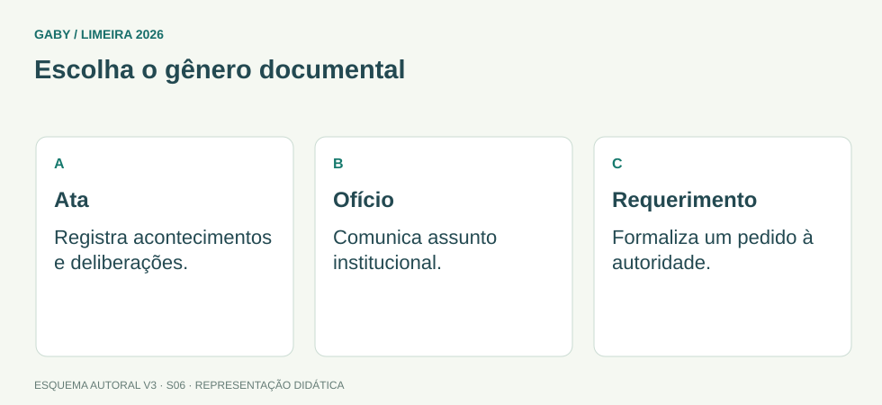

Objetivos do módulo
- Reconhecer finalidade de atas, ofícios, requerimentos e correspondências oficiais.
- Redigir com clareza, objetividade e impessoalidade.
- Estruturar registros de fatos sem ambiguidades.
- Evitar linguagem coloquial, excesso e informações sem fundamento.
- Aplicar os atributos da redação oficial do Manual de Redação da Presidência da República, 3ª edição (item 3): clareza e precisão, objetividade, concisão, coesão e coerência, impessoalidade, formalidade e padronização.
- Lavrar e corrigir uma ata: texto corrido, números por extenso, “digo” e “em tempo”, ordem das partes, encerramento e assinaturas.
- Montar um ofício no padrão ofício e um ofício de encaminhamento, com identificação do expediente, fecho e signatário corretos, sabendo quem expede ofício.
- Redigir requerimento, declaração, atestado e circular e distinguir pedido, despacho e ciência.
- Usar pronomes de tratamento e vocativos conforme o Manual e o Decreto 9.758/2019, sabendo a quem o decreto se aplica.
- Ler os modelos escolares do manual paulista de vida escolar (síntese das avaliações, ata de classificação, termo de adaptação, notificação) sem tratá-los como norma da rede municipal.
Escolha o gênero documental

Descrição em texto do esquema
- Ata: Registra acontecimentos e deliberações.
- Ofício: Comunica assunto institucional.
- Requerimento: Formaliza um pedido à autoridade.
Oficina visual · aplique o esquema
Qual documento é adequado para registrar deliberações de uma reunião? Liste três informações essenciais.
Atividade autoral complementar da V3. Registre sua resposta; a resolução está no arquivo de gabarito e revisão.
Mapa do conteúdo
1. Princípios de redação administrativa
A comunicação oficial deve ser clara, objetiva, precisa e adequada à situação. O texto precisa permitir compreensão uniforme, sem depender de interpretações subjetivas.
Impessoalidade não significa frieza: significa centrar a comunicação no interesse administrativo e no fato, evitando opiniões pessoais desnecessárias.
Fonte de referência e abrangência
A principal referência desta aula é o Manual de Redação da Presidência da República, 3ª edição (2018). Ele foi escrito para a administração pública federal, mas é muito usado como referência por bancas e por órgãos de estados e municípios (os manuais de Goiás e da UNIRIO, citados nesta aula, partem dele). Para a escola da rede municipal de Limeira, ele vale como referência técnica: se a rede municipal tiver manual ou modelo próprio, prevalece a regulamentação vigente da rede.
O Manual define redação oficial como a maneira pela qual o Poder Público redige comunicações oficiais e atos normativos (item 2). Nela, quem comunica é sempre o serviço público; o assunto é sempre uma atribuição do órgão que comunica; o destinatário pode ser o público, uma instituição privada ou outro órgão ou entidade pública (item 1).
Atributos da redação oficial (item 3)
O item 3 do Manual lista os atributos: clareza e precisão; objetividade; concisão; coesão e coerência; impessoalidade; formalidade e padronização; e uso da norma padrão da língua portuguesa. Eles decorrem dos princípios do art. 37 da Constituição, em especial publicidade, impessoalidade e eficiência.
| Atributo (item) | O que o Manual diz | Exemplo na escola |
|---|---|---|
| Clareza e precisão (3.1) | Clareza: texto de compreensão imediata; palavras simples, frases curtas em ordem direta, mesmo tempo verbal, sigla explicada na primeira vez. Precisão: exprimir a mesma ideia sempre com as mesmas palavras, sem trocar sinônimos só por estilo, e escolher termos que não deem duplo sentido. | Se o ofício trata da “reforma da quadra”, não alterne com “obra do ginásio” e “reparo do pátio”: o leitor pode achar que são três pedidos. |
| Objetividade (3.2) | Ir direto ao assunto, sem voltas nem redundâncias; separar a ideia principal das secundárias e dispensar as que nada acrescentam. | Abrir com o pedido: “Solicito a substituição de duas lâmpadas da sala 4.” |
| Concisão (3.3) | Transmitir o máximo de informação com o mínimo de palavras, sem cortar passagens essenciais; evitar adjetivos e advérbios inúteis. | “A reunião, muito produtiva e proveitosa, aprovou…” passa a “A reunião aprovou…”. |
| Coesão e coerência (3.4) | Partes ligadas entre si por referência, substituição, elipse e conjunções. | “O conselho analisou o caso. Ele decidiu…” (o pronome retoma “conselho”). |
| Impessoalidade (3.5) | Decorre de três pontos: ausência de impressões individuais de quem comunica (o texto sai em nome do serviço público, mesmo assinado por uma pessoa); destinatário tratado de forma impessoal; assunto de interesse público. | Em ata, nada de “a brilhante proposta da coordenadora”: registra-se “a coordenadora apresentou a proposta de…”. |
| Formalidade e padronização (3.6) | Regras de forma, civilidade no tratamento, padrão uniforme de apresentação e uso do padrão culto (norma-padrão) do idioma, sem rebuscamento nem jargão burocrático. | “Solicitamos o comparecimento à secretaria”, e não “passa aqui na escola”. |
Por isso, a modalidade de linguagem da redação oficial é a formal, na norma-padrão. Formal não quer dizer rebuscada: o Manual diz que a língua culta é contra a pobreza de expressão, não contra a simplicidade.
Correspondências e documentos
Muitas bancas agrupam os textos oficiais em duas categorias, correspondências e documentos. Correspondências são comunicações de um remetente para um destinatário declarado: ofício, circular, e-mail, carta. Documentos (atos de registro ou de comprovação) fixam fatos, decisões ou declarações: ata, declaração, atestado, certidão. As categorias se relacionam: uma correspondência pode encaminhar um documento (o ofício que remete cópia de uma ata), e ambas seguem os mesmos atributos da redação oficial.
A classificação não é única. O Manual de Atos Oficiais da UNIRIO, por exemplo, usa seis grupos, entre eles atos de correspondência (onde inclui ofício, circular e requerimento), atos de assentamento (como a ata) e atos comprovativo-declaratórios (como atestado e declaração).
2. Ata
Ata registra acontecimentos, discussões e deliberações de reunião ou evento colegiado. Deve identificar contexto, participantes conforme regra aplicável, assuntos e decisões de forma fiel e ordenada.
Em prova, atenção à ideia de que ata é registro de fatos ocorridos; não deve ser transformada em texto opinativo do secretário.
Conceito e valor documental
A ata é o registro claro, preciso e resumido do que ocorreu em uma reunião, sessão, assembleia ou convenção: quem participou, o que se tratou e o que se decidiu. Depois de lida, aprovada e assinada, ela tem valor de documento: comprova a deliberação para todos os efeitos, inclusive legais. O Manual de Redação do Governo de Goiás (cap. 12) a classifica entre os atos oficiais comprobatórios, e o manual da Universidade Federal Fluminense (UFF, item 3.2) a define como documento de valor jurídico que não pode ser modificado depois de aprovado.
O Manual da Presidência não traz modelo de ata. A forma vem de manuais de outros órgãos públicos e pode variar de um órgão para outro; na escola, siga o modelo adotado pela rede. As regras abaixo são as que esses manuais têm em comum.
Quem lavra e onde
Lavrar a ata é redigi-la. Quem redige é o secretário da reunião, efetivo ou designado só para aquela reunião. Tradicionalmente, a ata é lavrada em livro próprio, com termos de abertura e de encerramento e páginas numeradas e rubricadas. Também pode ser digitada em folhas soltas numeradas e rubricadas ou produzida em sistema eletrônico, com assinaturas eletrônicas (UFF; UNIRIO; Goiás, cap. 12.4).
Regras de forma
- Texto corrido: um só bloco, sem parágrafos, sem alíneas e sem recuo de início de parágrafo (Goiás, cap. 12; UFF).
- Sem espaços em branco e sem rasuras: cada linha é ocupada inteira, para que nada possa ser acrescentado depois (UNIRIO).
- Números por extenso: datas, horários e quantidades escritos por extenso (ou com o número repetido em palavras entre parênteses), também para impedir alteração (UFF; UNIRIO).
- Sem abreviaturas; siglas evitadas ou explicadas.
- Tempo verbal: pretérito perfeito do indicativo (“o conselho aprovou”, “a diretora informou”) (UNIRIO).
- Resumo, não transcrição: registra-se o essencial e o que leva às decisões, não cada fala (Goiás, cap. 12).
Como corrigir: “digo” e “em tempo”
| Quando o erro é percebido | Como corrigir | Exemplo |
|---|---|---|
| Durante a redação | Logo depois do trecho errado, escreve-se “digo”, entre vírgulas, seguido da forma correta. Não se rasura nem se apaga. | “…reunidos na sala de leitura, digo, no refeitório, …” |
| Depois de terminado o texto | Acrescenta-se, ao final e antes das assinaturas, a expressão “Em tempo:” com a correção. | “Em tempo: onde se lê ‘dezesseis horas’, leia-se ‘dezessete horas’.” |
Os manuais descrevem essas fórmulas para atas manuscritas ou lavradas em livro (UFF; UNIRIO; Goiás, cap. 12). Em ata digitada, o texto é corrigido antes da aprovação; depois de aprovada, a ata não é mais modificada.
Estrutura e ordem
A ata tem uma sequência própria, que acompanha o andamento da reunião. Começar pela pauta e deixar data e local para o fim, por exemplo, quebra essa sequência e descaracteriza o gênero.
| Ordem | Parte | O que contém |
|---|---|---|
| 1 | Cabeçalho e identificação | Órgão ou escola; título ATA, número e, se for o caso, siglas da unidade (Goiás, cap. 12.1 e 12.2). |
| 2 | Abertura do corpo | Tipo de reunião e órgão ou colegiado; data por extenso, horário e local; quem preside. |
| 3 | Participantes | Nomes e funções; no colegiado, primeiro quem preside e depois os demais, por hierarquia quando houver. |
| 4 | Desenvolvimento | Pauta (ordem do dia); registro objetivo e resumido das manifestações, votações e deliberações. |
| 5 | Encerramento | Registro de que, nada mais havendo a tratar, a reunião foi encerrada, em geral por quem preside, com o horário. |
| 6 | Fecho | Nome de quem lavrou a ata e declaração de que, lida e aprovada, ela será assinada. |
| 7 | Assinaturas | Dos presentes ou, quando assim se decidir e houver registro de frequência, do presidente e do secretário; em sistema eletrônico, assinaturas eletrônicas. |
O Manual de Goiás lista esses constituintes nessa sequência e os ilustra com um exemplo (cap. 12.3 e 12.4); o manual da UNIRIO manda o corpo começar por data, horário e local e seguir com participantes, assuntos tratados e decisões. Fórmula usual de fecho: “Nada mais havendo a tratar, a presidente encerrou a reunião, e eu, [nome], [função], lavrei a presente ata, que, lida e aprovada, vai assinada por mim e pelos presentes.”
Assinaturas e autoria
As assinaturas ligam pessoas e funções ao registro: mostram quem redigiu e quem participou do ato ou responde por ele. Elas não substituem o conteúdo e não provam participação de quem não esteve presente. Por isso, o fecho identifica quem lavrou a ata, e cada assinatura corresponde a um participante identificado no corpo.
Fidelidade ao que foi deliberado
- Registre o resultado como ele ocorreu: se houve votos contrários ou abstenções, a ata não pode dizer “por unanimidade”.
- Separe recomendação, decisão e execução: “o conselho indicou a necessidade de aulas de reforço” não é o mesmo que “as aulas de reforço foram dadas”.
- Fato posterior à reunião (um documento que chegou depois) não entra como se tivesse sido analisado; segue o procedimento próprio, como nova reunião e novo registro.
- Quando a reunião trata de vários alunos ou casos, cada decisão fica ligada ao aluno correspondente.
- Nada de opinião do redator: sem adjetivos de valor e sem comentários (impessoalidade, item 3.5 do Manual da Presidência).
Ata, lista de presença e requerimento
A lista de presença prova quem compareceu, mas não registra o que se discutiu nem o que se decidiu; isso é papel da ata. E um texto em que uma pessoa apresenta, em nome próprio, um pedido à autoridade não é ata: é requerimento (seção 4).
3. Ofício e correspondência oficial
Ofício é instrumento de comunicação oficial entre órgãos, autoridades ou destinatários no contexto administrativo. Sua estrutura segue padrão institucional e deve apresentar assunto, mensagem e identificação de forma organizada.
Modelos exatos podem variar por órgão. A referência desta aula é o padrão ofício do Manual de Redação da Presidência da República, 3ª edição (item 5). Em questões conceituais, priorize finalidade, clareza, formalidade e identificação adequada.
Quem expede o ofício
No Manual da Presidência, o ofício é o expediente da comunicação oficial, e na redação oficial quem comunica é sempre o serviço público (item 1). Ele é expedido por órgãos e autoridades públicas e pode ser dirigido a outras autoridades, a instituições privadas e a particulares, pessoas físicas ou jurídicas. O manual da UFF define o ofício do mesmo modo: comunicação das autoridades entre si e entre a Administração e particulares. Desde a 3ª edição do Manual da Presidência, o nome “ofício” vale também para os antigos aviso e memorando: ficou um só formato, o padrão ofício (item 5).
O particular, quando se dirige à administração, não expede ofício: usa requerimento para pedir algo (seção 4) ou carta e e-mail para comunicar. Na escola, os ofícios saem da unidade escolar e são assinados pela autoridade competente segundo as regras da rede (nos modelos escolares, o diretor de escola); o secretário de escola redige, numera, confere anexos e controla a expedição.
Partes do padrão ofício (item 5.1)
| Item | Parte | Regra |
|---|---|---|
| 5.1.1 | Cabeçalho | Só na primeira página, centralizado: brasão (no modelo federal, o Brasão de Armas da República), nome do órgão principal e dos órgãos secundários, do maior para o menor. |
| 5.1.2 | Identificação do expediente | Nome do documento por extenso e em letras maiúsculas; abreviatura “Nº”; número, ano com quatro dígitos e siglas do setor que expede, da menor para a maior hierarquia, separados por barra (/); alinhada à esquerda. |
| 5.1.3 | Local e data | Cidade e vírgula, sem a sigla do estado; dia sem zero à esquerda (ordinal só no primeiro dia: 1º); mês com inicial minúscula; ponto-final; alinhados à direita. |
| 5.1.4 | Endereçamento | Forma de tratamento (“Ao Senhor”, “À Senhora”, “A Sua Excelência o Senhor”), nome, cargo e endereço do destinatário em duas linhas; à esquerda. |
| 5.1.5 | Assunto | “Assunto:” e uma frase curta, sem verbo (sugestão: quatro a cinco palavras), com inicial maiúscula, tudo em negrito e com ponto-final. |
| 4.4 | Vocativo | Depois do assunto, seguido de vírgula: “Senhora Secretária,”. |
| 5.1.6 | Texto | Introdução, desenvolvimento e conclusão; prefira “Informo”, “Solicito”, “Comunico” a “Tenho a honra de”; parágrafos numerados quando houver três ou mais (vocativo e fecho não se numeram); fonte Calibri ou Carlito, corpo 12. |
| 5.1.7 | Fecho | “Respeitosamente,” para autoridade de hierarquia superior à do remetente; “Atenciosamente,” para a mesma hierarquia, hierarquia inferior e demais casos. |
| 5.1.8 | Signatário | Nome em maiúsculas, sem negrito; cargo só com iniciais maiúsculas; centralizado; não deixar a assinatura sozinha numa página. |
| 5.1.9 | Numeração das páginas | Obrigatória a partir da segunda página. |
Identificação do expediente: certo e errado
Exemplo fictício para a secretaria de uma escola municipal: OFÍCIO Nº 37/2026/SEC/EMEFAB/SME. Nome em maiúsculas, número, ano com quatro dígitos e siglas da menor unidade (secretaria da escola) para a maior (Secretaria Municipal de Educação), separadas por barra. Formas como “Of. 37/26 – EMEF A. B.” estão erradas: nome abreviado, ano com dois dígitos e travessão no lugar da barra.
Variações do item 6.1: OFÍCIO CIRCULAR (o mesmo expediente para vários destinatários), OFÍCIO CONJUNTO (vários órgãos remetentes para um destinatário) e OFÍCIO CONJUNTO CIRCULAR (vários remetentes para vários destinatários).
Ofício de encaminhamento
Quando o ofício serve para remeter documentos, a estrutura do texto muda (item 5.1.6, II). A introdução começa pela referência ao expediente que pediu a remessa; se ninguém pediu, começa informando que se encaminha, com os dados completos do documento (tipo, data, origem ou signatário e assunto) e o motivo. Só há parágrafos de desenvolvimento se o remetente quiser comentar o que envia.
O Manual de Procedimentos de Vida Escolar da Secretaria da Educação de São Paulo (2020, p. 67) mostra um caso escolar: para regularizar a vida escolar de um aluno, a escola instrui o expediente com o histórico dos fatos e os documentos (documentos pessoais, histórico escolar, matriz curricular, atas do conselho e outros) e o encaminha por ofício ao Dirigente Regional de Ensino. Depois vêm o parecer do supervisor, a publicação da portaria de regularização no Diário Oficial e a ciência ao aluno ou responsável. Um bom ofício de encaminhamento:
- identifica o estudante, o caso e o número do processo;
- traz a síntese cronológica dos fatos (o que ocorreu, quando foi identificado, que providência foi tomada e quando), cada fato apoiado no documento que o comprova;
- relaciona os anexos e confere, antes do envio, se cada documento citado está de fato juntado;
- descreve o estágio real do processo: parecer emitido não é decisão publicada, e encaminhar não é presumir que o destinatário vai deferir.
4. Requerimento
Requerimento é utilizado para formular pedido à autoridade competente. Deve identificar o requerente, apresentar o pedido e, quando necessário, fundamento e documentação.
O servidor que recebe não deve prometer deferimento; deve protocolar/orientar e encaminhar à autoridade competente.
Conceito e quem requer
Requerimento é o documento pelo qual o interessado, pessoa física ou jurídica, pede à autoridade algo a que entende ter direito, ou se defende de ato que o prejudique (UFF, item 3.33). O texto pode citar o amparo legal (a norma que fundamenta o pedido). Não é documento só de servidores nem só de comunicação interna: na escola, quem mais requer são alunos maiores de idade e responsáveis (transferência, segunda via de documento, revisão, dispensa da prática de Educação Física, equivalência de estudos).
O Manual da Presidência não regula o requerimento; a forma abaixo é a do manual da UFF e pode variar por órgão. Muitas redes usam formulário próprio de requerimento escolar.
Partes do requerimento
| Parte | Conteúdo |
|---|---|
| Vocativo e destinatário | A autoridade a quem o pedido se dirige, pelo cargo completo (ex.: “Senhora Diretora da Escola Municipal …”). |
| Preâmbulo | Nome do requerente (no modelo da UFF, em maiúsculas) e os dados de identificação que o pedido exige; aluno: ano, turma, matrícula; servidor: dados funcionais. |
| Texto | Exposição clara e objetiva do pedido: o que se pede, para quê, com que fundamento e com quais documentos. |
| Fecho | “Nestes termos, pede deferimento.” Variantes: “Espera deferimento”, “Aguarda deferimento” e as abreviações N.T., P.D., E.D., A.D. |
| Local e data | Por extenso. |
| Assinatura | Do requerente. |
O que torna o pedido analisável
- Objeto e finalidade coerentes: pedir equivalência de estudos para continuar estudando não é pedir equivalência em nível de conclusão. No manual paulista (p. 44), o primeiro pedido vai ao diretor de escola; o segundo, ao dirigente regional de ensino.
- Período e fundamento: a dispensa da prática de Educação Física, por exemplo, é requerida ao diretor no início de cada período letivo, com documento que comprove a situação legal alegada, como jornada de trabalho de seis horas ou mais (manual paulista, p. 63).
- Documentos identificados: cite cada anexo e o que ele comprova (“declaração do empregador informando jornada de oito horas diárias”).
- Origem e efeito separados: em estudos feitos no exterior, identifique a escola e o curso de origem e, à parte, a providência pedida.
Pedido, despacho e ciência
Requerimento é pretensão, não decisão. Quem recebe protocola e encaminha; quem decide é a autoridade competente, por meio de despacho, que é a decisão proferida pela autoridade no caso submetido à sua apreciação (UFF, item 3.11). Em seguida, o interessado toma ciência: assina que conheceu a decisão. Ciência não é concordância nem decisão.
A comunicação ao interessado segue o despacho efetivamente proferido (deferido ou indeferido, com o fundamento), nunca a expectativa do requerente nem o resultado de outro caso. No manual paulista (p. 63), o requerimento de dispensa é arquivado com o despacho do diretor no prontuário do aluno.
5. Revisão antes do envio
Confira destinatário, assunto, nomes, datas, anexos, referências, ortografia e coerência. Em documentos escolares, um erro de nome ou data pode produzir consequências maiores que um simples erro estético.
Roteiro de conferência
- O gênero corresponde à finalidade (registrar: ata; comunicar: ofício ou circular; pedir: requerimento; comprovar: declaração ou atestado)?
- Destinatário, cargo, forma de tratamento, vocativo e fecho estão adequados à hierarquia?
- Identificação do expediente, números e datas estão no padrão (ano com quatro dígitos, data sem zero à esquerda)?
- Cada anexo citado está juntado, e cada documento juntado está citado?
- O conteúdo bate com o ato de origem (a ata com a deliberação; a comunicação com o despacho)?
- Quem assina tem competência para o ato?
6. Pronomes de tratamento, vocativo e Decreto 9.758/2019
O que o Manual da Presidência ensina (item 4)
Os pronomes de tratamento aparecem em três momentos: no endereçamento, no vocativo e no corpo do texto (item 4.1). Embora se dirijam à pessoa com quem se fala, levam o verbo e os possessivos para a terceira pessoa: “Vossa Senhoria designará seu substituto”, e não “vosso” (item 4.1.1). O adjetivo concorda com o sexo da pessoa: “Vossa Excelência está atarefada”, para uma mulher. Usa-se “Vossa” para falar com a autoridade e “Sua” para falar dela, como no endereçamento “A Sua Excelência o Senhor”.
| Ponto | Regra do Manual | Exemplo |
|---|---|---|
| Vocativo (4.4) | Sempre seguido de vírgula. Chefes de Poder: “Excelentíssimo Senhor” + cargo. Demais autoridades: “Senhor” ou “Senhora” + cargo. | “Senhora Secretária,”; “Senhor Juiz,” |
| Vocativo para particular (4.4) | “Senhor” ou “Senhora” + nome, ou a forma usada pela instituição, ou “Prezado Senhor”. | “Senhora Responsável,”; “Prezado Senhor,” |
| Endereçamento (5.1.4) | “A Sua Excelência o Senhor” para quem é tratado por Vossa Excelência; “Ao Senhor” ou “À Senhora” para quem é tratado por Vossa Senhoria. Não se usa “A Sua Senhoria o Senhor”. | “À Senhora / [Nome] / Diretora de Escola” |
| Formas abolidas (4.4) | “Digníssimo” (DD) e “Ilustríssimo” (Ilmo.) estão abolidos; evita-se “doutor” sem critério. “Senhor” já confere a formalidade. | Não: “Ilmo. Sr. Diretor”. Sim: “Senhor Diretor,” |
O Decreto 9.758/2019
O decreto, em vigor desde 1º de maio de 2019, simplificou o tratamento dado aos agentes públicos federais. O Manual da Presidência (3ª edição, de 2018) é anterior a ele; por isso o quadro do item 4.1 ainda mostra “Vossa Excelência” para várias autoridades.
| Dispositivo | O que determina | Como cai |
|---|---|---|
| Art. 1º, caput e §§ 1º e 2º | Trata da forma de tratamento na comunicação oral ou escrita com agentes públicos da administração federal direta e indireta e do endereçamento a eles; vale também em cerimônias e alcança servidores, militares, empregados públicos, temporários, terceirizados, cargos em comissão e autoridades, inclusive ministros, o Vice-Presidente e o Presidente. | Pergunta a quem o decreto se aplica. |
| Art. 1º, § 3º | Não se aplica à comunicação com autoridades estrangeiras e organismos internacionais, nem à comunicação com agentes do Judiciário, do Legislativo, do Tribunal de Contas, da Defensoria, do Ministério Público ou de outros entes federativos quando estes exigirem tratamento especial com base em norma própria. | Exceções ao uso de “senhor”. |
| Art. 2º e parágrafo único | O único pronome é “senhor”, flexionado para o feminino e o plural (“senhora”, “senhores”). | Tratamento correto de um ministro ou de um reitor federal. |
| Art. 3º | Proíbe, mesmo abreviadas: Vossa Excelência ou Excelentíssimo; Vossa Senhoria; Vossa Magnificência; doutor; ilustre ou ilustríssimo; digno ou digníssimo; respeitável. § 1º: quem exigir tratamento especial com base em norma da sua carreira deve tratar o interlocutor do mesmo modo. § 2º: é proibido negar o ato administrativo ou repreender o interlocutor por erro na forma de tratamento. | Lista das formas vedadas; consequência do erro de tratamento. |
| Art. 4º e parágrafo único | O endereçamento não leva pronome de tratamento nem o nome do agente; ambos podem constar quando o cargo e o setor não bastarem para identificar o destinatário ou quando a correspondência for dirigida a pessoa específica. | Endereçamento só com cargo e setor. |
Abrangência: o decreto é federal e vincula a administração pública federal. Ele não obriga a Prefeitura de Limeira nem a escola municipal: para a rede municipal, é referência usada pela banca, e vale a norma municipal se houver. Em prova, veja se a questão pede a regra do Manual ou a do decreto. Em qualquer caso, “Senhor” ou “Senhora” + cargo no vocativo (“Senhor Secretário,”) está correto, e “Ilustríssimo” e “Digníssimo” estão fora tanto pelo Manual quanto pelo decreto.
7. Declaração, atestado, circular e comunicado escolar
Declaração e atestado
O Manual da Presidência não regula esses documentos, e os modelos variam por órgão. No manual da UFF (itens 3.3 e 3.10), a diferença está na origem da informação:
| Documento | Para que serve | Forma |
|---|---|---|
| Declaração | Afirma um fato que consta de livros, papéis ou documentos em poder da Administração (ex.: a matrícula registrada no sistema e no prontuário). | Título DECLARAÇÃO, em maiúsculas e centralizado; texto em parágrafo único, dizendo a quem se refere e o que se declara; local e data por extenso; assinatura, nome e cargo de quem declara. Fórmula usual: “Declaro, para os devidos fins, que…”. |
| Atestado | Afirma um fato existente que não consta de registros da Administração e que o servidor conhece em razão do cargo ou da função. | Título ATESTADO; parágrafo único; local e data por extenso; assinatura. Fórmula usual: “Atesto, para os devidos fins, que…”. |
Nem todo órgão faz essa distinção: a UNIRIO manda usar a declaração também nos casos de atestado, e o Manual de Goiás recomenda usar o próprio padrão ofício para requerer, declarar e certificar. Na escola, a declaração de matrícula ou de frequência se apoia nos registros escolares; por isso, antes de assinar, confere-se o dado no sistema ou no prontuário.
Circular e comunicado escolar
Circular é a correspondência expedida ao mesmo tempo a vários destinatários para transmitir orientações, rotinas ou procedimentos, esclarecer normas ou dar publicidade a uma informação (UFF, item 3.6). No padrão ofício, o mesmo expediente enviado a mais de um órgão recebe a palavra CIRCULAR na identificação, como em OFÍCIO CIRCULAR Nº 5/2026/… (Manual da Presidência, item 6.1). A circular não serve para criar regra: normas se fazem por ato próprio, como portaria ou ordem de serviço.
Na escola, o comunicado às famílias funciona como uma circular: o mesmo texto vai a todos os destinatários. Ele identifica a escola e o assunto, diz o que muda ou o que se pede, com datas, horários e local, e traz quem assina. A linguagem é formal, mas simples, porque o leitor é o público (clareza, item 3.1).
8. Modelos escolares: classificação, adaptação e notificação
Muitas questões de Secretário de Escola usam o Manual de Procedimentos de Vida Escolar da Secretaria da Educação do Estado de São Paulo (edição 2020). Ele é referência técnica da rede paulista e não é norma da rede municipal de Limeira. Serve para entender a função de cada documento; a forma, a competência e os prazos exigidos na escola municipal são os da regulamentação vigente da rede municipal.
Síntese das avaliações e ata de classificação
Classificação é o posicionamento do aluno no ano, série ou termo adequado por meio de avaliação, por exemplo quando não há documentação escolar; o próprio modelo paulista cita como fundamento o art. 24 da LDB (Lei 9.394/1996). O manual traz dois registros diferentes:
| Documento | Função | Conteúdo no modelo |
|---|---|---|
| Registro da síntese das avaliações (p. 27) | Registra os resultados das avaliações. | Aluno e documento de identidade; data; ano/série/termo e nível pretendidos; por disciplina, nome e RG do professor, resultado e assinatura; resultado da redação; “de acordo” do diretor e “ciente” do aluno ou responsável. |
| Ata de classificação (p. 28) | Registra a deliberação do conselho. | Data e escola; presidência do diretor; reunião do conselho de classe/ano/série para analisar as avaliações do aluno identificado; parecer: apto ou não apto a cursar determinado ano/série/termo e nível; se deverá ou não fazer estudos de adaptação e em quais disciplinas; encerramento, quem lavrou e assinaturas do diretor e dos professores. |
Pontos de atenção na ata de classificação:
- escola, data e participantes com suas funções identificados; modelo copiado de outro caso precisa ser todo individualizado;
- resultado sem contradição: só uma opção marcada (apto ou não apto), com o ano/série/termo e o nível definidos;
- adaptação marcada exige os componentes nomeados; campo vazio não equivale a dispensa e deve ser conferido com a deliberação;
- classificação e adaptação podem coexistir: o aluno é classificado numa etapa e faz adaptação em alguns componentes;
- cada aluno com suas avaliações e seu resultado, sem misturar casos.
Adaptação de estudos e termo de adaptação
Adaptação de estudos é o procedimento pelo qual a escola complementa a escolaridade do aluno vindo de outra instituição com componentes obrigatórios da matriz que ele não cursou (p. 39). O diretor compara o histórico escolar com a matriz curricular da escola e define os componentes; a escola dá ciência por escrito do plano ao aluno maior de idade ou ao responsável e lavra o ato em livro próprio, com o nome do aluno, os componentes curriculares, o professor responsável, a decisão final e a assinatura do diretor.
O termo de complementação de matrícula por adaptação de estudos (p. 40) registra: aluno, ano/série/termo e nível; os componentes que exigem adaptação, referidos à matriz do curso em que ele se matricula; campo de despacho do diretor; ciência do aluno ou responsável; professores responsáveis, cada um com seu “ciente”; e parecer da supervisão de ensino. Ao preencher: diferencie a escolaridade de origem da etapa de matrícula; nomeie cada componente, sem expressões genéricas; indique o responsável por cada componente conforme a distribuição real; marque só o nível (Fundamental ou Médio) que se aplica. Despacho (decisão do diretor) e ciência (conhecimento do interessado) ficam em campos separados porque são atos diferentes.
Notificação e convocação dos responsáveis
Nos modelos das p. 33 e 34 (frequência irregular), o diretor notifica os responsáveis a comparecer à escola em data marcada ou dentro de um prazo, com a finalidade (tomar ciência da frequência e apresentar justificativas) e o fundamento legal. Se não houver manifestação, comunica o fato ao Conselho Tutelar e encaminha a documentação. A entrega é feita em mãos, com protocolo (data, assinatura, nome e RG de quem recebe), ou pelo correio com aviso de recebimento.
Toda convocação escolar precisa trazer: destinatário identificado, com o vínculo com o aluno conferido; o aluno e o procedimento a que se refere (essencial quando a família recebe mais de uma); data, horário e local; e a finalidade do comparecimento. Data de emissão e data de recebimento são registros distintos: o protocolo anota o dia em que a pessoa efetivamente recebeu, não o dia em que o aviso foi impresso.
Modelo não é norma
Um modelo é estrutura de referência. Antes de formalizar o documento: troque todos os dados (escola, aluno, datas, participantes) pelos do caso real; marque só as opções que se aplicam e elimine as que não servem; confira se a rede municipal tem modelo, prazo ou competência diferentes. Os fundamentos citados no modelo paulista (deliberações do Conselho Estadual de Educação, resoluções da secretaria estadual) foram escritos para a rede estadual paulista; se e como valem para a escola municipal depende da organização da rede, por isso consulte a regulamentação vigente da rede municipal.
Exemplos resolvidos passo a passo
Exemplo 1
Situação: Ata contém: “A diretora apresentou uma ideia maravilhosa, que todos deveriam aceitar.”
Exemplo 2
Situação: Responsável entrega pedido escrito e exige garantia de deferimento.
Exemplo 3
Situação: Ofício menciona “documentos anexos”, mas nenhum arquivo está junto.
Exemplo 4
Situação: Ao lavrar à mão a ata de uma reunião de pais, o secretário escreveu “na quadra” e percebeu na mesma hora que a reunião foi no refeitório. Depois de terminar o texto, notou que anotou o início às dezenove horas, quando foi às dezoito horas e trinta minutos.
Exemplo 5
Situação: A diretora de uma escola municipal fictícia vai enviar à Secretaria Municipal de Educação a relação dos alunos que usam o transporte escolar. Monte o início e o fim do ofício.
Exemplo 6
Situação: A escola precisa comprovar a um órgão de assistência social que um aluno está matriculado no 6º ano. No mesmo dia, a diretora precisa afirmar que acompanhou pessoalmente uma atividade de um voluntário que não foi registrada em nenhum documento da escola.
Exemplo 7
Situação: Uma responsável requer a mudança de turno do filho “imediatamente”. O diretor despacha: deferido a partir do início do 3º bimestre, por falta de vaga antes disso. A secretaria vai avisar a família.
Pegadinhas e erros frequentes
- Confundir ata com opinião.
- Usar linguagem vaga ou coloquial.
- Prometer resultado de requerimento.
- Esquecer anexos citados.
- Expedir documento sem conferir nomes e datas.
- Escrever ata com parágrafos, linhas em branco ou números só em algarismos.
- Corrigir ata com rasura, em vez de usar “digo” (durante a redação) ou “Em tempo:” (depois do texto pronto).
- Mudar a ordem da ata: pauta antes de data, local e participantes.
- Registrar “por unanimidade” quando houve divergência, ou como feito o que foi só recomendado.
- Achar que a lista de presença substitui a ata.
- Identificar o ofício com nome em minúsculas, ano com dois dígitos, setor por extenso ou travessões em vez de barras.
- Usar “Respeitosamente,” para autoridade de mesma hierarquia ou inferior.
- Usar “Ilustríssimo” ou “Digníssimo”, abolidos pelo Manual e vedados pelo Decreto 9.758/2019.
- Achar que o Decreto 9.758/2019 obriga a prefeitura: ele vincula a administração federal.
- Tratar requerimento como deferimento, ou ciência como decisão.
- Achar que o particular expede ofício para pedir algo à escola: ele usa requerimento.
- Confundir declaração (fato registrado) e atestado (fato não registrado).
- Usar o modelo paulista de vida escolar como se fosse norma da rede municipal.
Resumo de prova
- Redação oficial busca clareza, precisão e impessoalidade.
- Ata registra fatos e deliberações.
- Ofício realiza comunicação oficial.
- Requerimento formaliza pedido.
- Revisão evita erros administrativos.
- Atributos (MRPR, item 3): clareza e precisão, objetividade, concisão, coesão e coerência, impessoalidade, formalidade e padronização, norma-padrão.
- Precisão (3.1): mesmas palavras para a mesma ideia, sem duplo sentido. Impessoalidade (3.5): sem impressões de quem comunica.
- Ata: texto corrido, sem parágrafos nem espaços em branco, números por extenso; “digo” e “Em tempo:”; aprovada e assinada, tem valor de documento.
- Ordem da ata: identificação, data, horário e local, participantes, pauta e deliberações, encerramento, fecho e assinaturas.
- Padrão ofício (item 5.1): OFÍCIO Nº 37/2026/SIGLAS em maiúsculas; data sem sigla do estado; assunto sem verbo; “Respeitosamente” (superior) ou “Atenciosamente” (demais).
- Ofício é expedido pelo poder público, inclusive a particulares; o particular usa requerimento ou carta.
- Requerimento: vocativo, preâmbulo, texto, “Nestes termos, pede deferimento”, local, data e assinatura; decisão vem por despacho; ciência é conhecimento.
- Decreto 9.758/2019: “senhor” para agentes públicos federais; vedados Vossa Excelência, Vossa Senhoria, doutor, ilustríssimo, digníssimo; não obriga o município.
- Declaração: fato registrado; atestado: fato não registrado (critério da UFF; varia por órgão).
- Manual paulista de vida escolar: síntese das avaliações (resultados) × ata de classificação (deliberação); termo de adaptação com componentes, responsáveis, despacho e ciência; referência, não norma municipal.
Exercícios do módulo
Resolva sem consultar o arquivo de gabarito. As questões são autorais e construídas para treinar os conceitos do edital.
- linguagem literária
- registro fiel de fatos e deliberações
- opiniões pessoais do redator
- propaganda
- foco no interesse e fato administrativo, sem opiniões pessoais indevidas
- proibição de clareza
- uso de gírias
- ausência de destinatário
- registrar estoque
- substituir histórico escolar
- fazer ata de reunião
- formular pedido à autoridade competente
- rasurar o pedido
- descartar
- dar encaminhamento conforme procedimento e competência
- garantir deferimento
- nada
- destinatário, assunto, anexos, nomes e datas
- apenas a cor da fonte
- somente o tamanho do papel
- pode ser juízo subjetivo inadequado se não refletir deliberação registrada
- é sempre obrigatória
- substitui decisão
- é elemento essencial
- eliminar informações essenciais
- usar frases ambíguas
- ser informal
- comunicar o necessário sem rodeios que prejudiquem compreensão
- uma planilha
- um tipo de arquivo morto
- forma de comunicação oficial administrativa
- documento exclusivo de notas escolares
- abreviações inventadas
- texto compreensível e sem ambiguidade desnecessária
- uso de jargão obscuro
- frases incompletas
- ser corrigido/conferido antes da expedição
- ser enviado assim mesmo
- ter o anexo omitido sem revisão
- ser arquivado como correto
Quando terminar, abra Secretário de Escola 06 - Redação Oficial - Atas, Ofícios e Requerimentos - Gabarito e Revisão.
Checklist de domínio
- ☐ Reconhecer finalidade de atas, ofícios, requerimentos e correspondências oficiais.
- ☐ Redigir com clareza, objetividade e impessoalidade.
- ☐ Estruturar registros de fatos sem ambiguidades.
- ☐ Evitar linguagem coloquial, excesso e informações sem fundamento.
- ☐ Identificar qual atributo do item 3 do Manual um defeito de redação viola.
- ☐ Lavrar uma ata na ordem certa e corrigi-la com “digo” e “Em tempo:”.
- ☐ Escrever a identificação do expediente, a data, o assunto, o fecho e o signatário de um ofício.
- ☐ Redigir um ofício de encaminhamento com fatos em ordem cronológica e anexos conferidos.
- ☐ Montar um requerimento e distinguir requerimento, despacho e ciência.
- ☐ Escolher entre declaração e atestado e saber para que serve a circular.
- ☐ Aplicar pronomes, vocativos e o Decreto 9.758/2019, sabendo que ele vale para a administração federal.
- ☐ Ler os modelos paulistas de classificação, adaptação e notificação e adaptá-los à regulamentação da rede municipal.
Meta do módulo: 80% ou mais nas questões, sem depender de consulta.
Referências e conteúdos auxiliares
- Presidência da República — Manual de Redação, 3ª ediçãoClareza, redação oficial, concordância, regência e pontuação. Referência de apoio; modelos locais podem ter regras próprias.
- Presidência da República — Manual de Redação, 3ª edição (2018), cópia oficial no gov.brConferidos os itens 1 e 2 (conceito e panorama), 3 e 3.1 a 3.6 (atributos), 4.1, 4.1.1 e 4.4 (pronomes, concordância e vocativo), 5 e 5.1.1 a 5.1.9 (padrão ofício, inclusive identificação do expediente, encaminhamento, fechos e signatário) e 6.1 (ofício circular e conjunto). O PDF do Planalto não respondeu na consulta; usada a cópia publicada no gov.br. Conferido em 18/11/2026.
- Planalto — Decreto 9.758/2019, tratamento e endereçamento de agentes públicos federaisConferidos art. 1º, caput e §§ 1º a 3º; art. 2º e parágrafo único (transcrição do caput); art. 3º, incisos I a VII e §§ 1º e 2º; art. 4º e parágrafo único; art. 5º (vigência). Norma federal: referência para a rede municipal. Conferido em 18/11/2026.
- Secretaria da Educação de São Paulo — Manual de Procedimentos de Vida Escolar, 2020Conferidos os modelos das p. 26 a 28 (portaria de designação, síntese das avaliações, ata de classificação), p. 33 e 34 (notificação e correspondência ao Conselho Tutelar), p. 39 e 40 (adaptação de estudos e termo), p. 44 (equivalência de estudos), p. 63 (dispensa da prática de Educação Física) e p. 67 (regularização por ofício ao Dirigente Regional). Referência técnica da rede estadual paulista, não norma da rede municipal. Conferido em 18/11/2026.
- Governo de Goiás — Manual de Redação, nova edição de 2026Conferidos o capítulo 12 (ata: atos comprobatórios, parágrafo único, “digo”, cabeçalho, epígrafe, corpo e fechamento, exemplo) e a observação sobre o uso do padrão ofício para requerer, declarar e certificar. Norma de outro estado, citada por ser usada em questões. Conferido em 18/11/2026.
- Universidade Federal Fluminense — Manual de Atos e Comunicações Oficiais (2003)Conferidos os itens 3.2 (ata: valor jurídico, texto corrido, números por extenso, “digo”, “Em tempo”), 3.3 (atestado), 3.4 (carta), 3.6 (circular), 3.10 (declaração), 3.11 (despacho), 3.23 (ofício) e 3.33 (requerimento e fechos). Manual de órgão federal; a forma pode variar por órgão. Conferido em 18/11/2026.
- UNIRIO — Manual de Atos Oficiais, 2ª edição revista e atualizadaConferidos a classificação dos atos em seis grupos, os aspectos da redação oficial, o padrão ofício, a ata (redação linear, sem espaços em branco, números por extenso, ordem do corpo, fecho, assinaturas, “digo” e “Em tempo”) e a declaração (usada também para atestado). Conferido em 18/11/2026.
Referências externas de apoio consultadas para a V3 em 27/09/2026. A origem das questões é o material autoral do projeto; estes links não indicam que uma instituição publicou ou validou os exercícios. As páginas externas precisam de internet. Em informática, confira a versão do programa; em legislação, observe o recorte e as regras de atualização do edital.